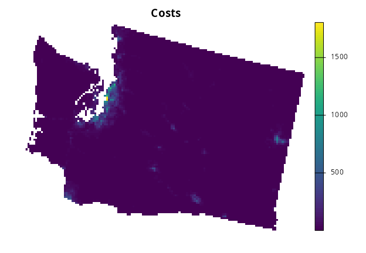
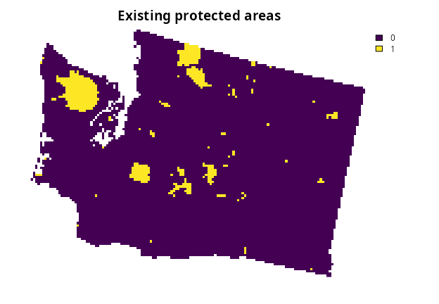
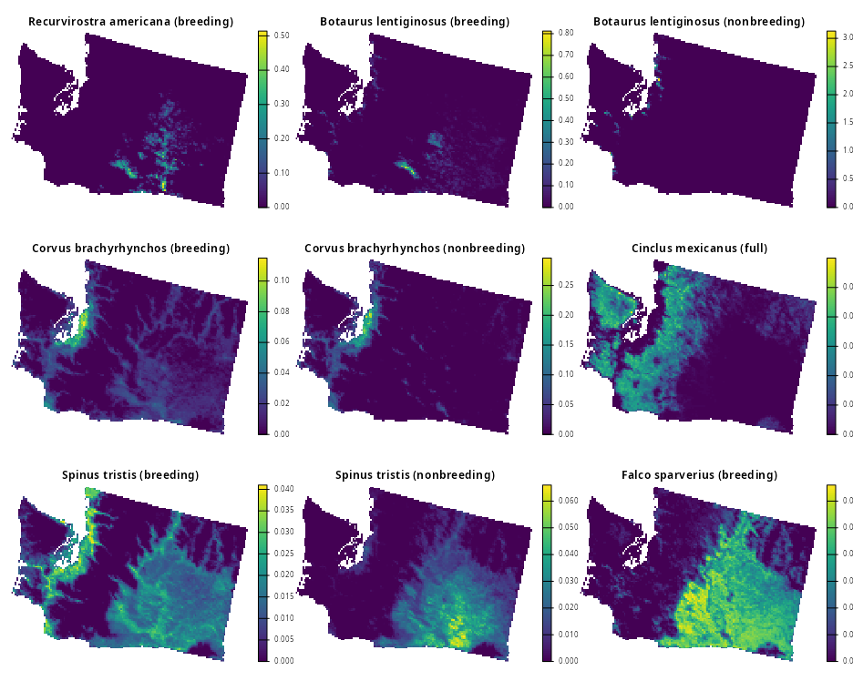
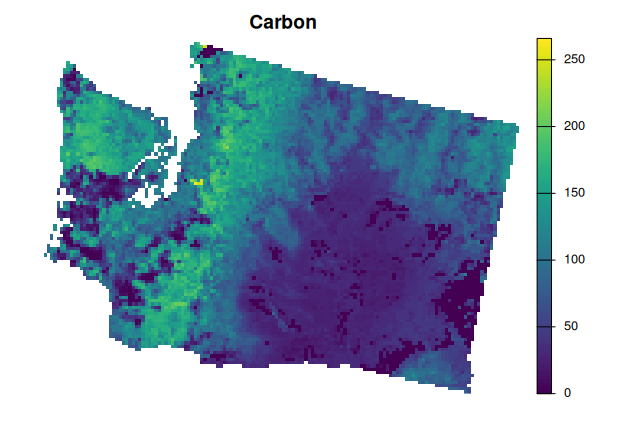
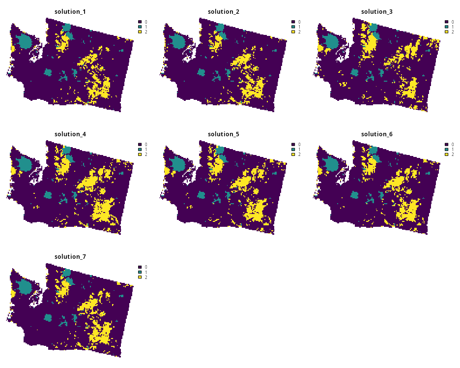
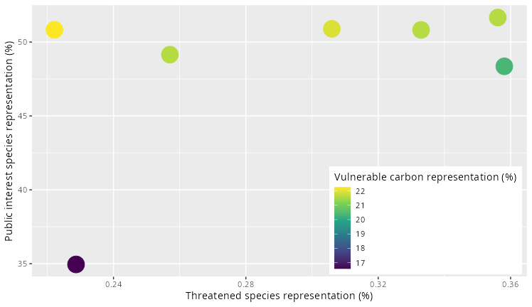

moec.prioritizr: Multi-Objective Prioritization with the Epsilon-Constraint Approach


Overview
Systematic conservation planning is a framework to identify priority areas for conservation management (Giakoumi et al. 2025). Briefly, priority areas are identified by formulating a mathematical optimization problem based on conservation objectives and requirements and then using optimization algorithms to generate solutions. To help account for multiple objectives, the moec.prioritizr R package provides an implementation of the epsilon-constraint approach for multi-objective optimization (Eichfelder 2008). The package is designed as a plugin for the prioritizr R package – a general purpose package for systematic conservation planning (Hanson et al. 2025) – and provide enhanced functionality. By using multi-objective optimization approaches, conservation scientists and practitioners can explore trade-offs and identify solutions that represent a desirable compromise among multiple objectives (Neubert et al. 2025).
Installation
Package installation
The latest developmental version of the moec.prioritizr R package can be installed using the following R code. Please note that it requires the sf and terra R packages, which may require additional software to be installed. If you encounter problems installing these dependencies, please consult their installation instructions.
if (!require(remotes)) install.packages("remotes")
remotes::install_github("AboozarM/moec.prioritizr")Usage
Here we provide a short example for using the moec.prioritizr R package to generate conservation plans (hereafter, prioritizations) with the prioritizr R package. Specifically, we will use an example dataset available through the prioritizrdata R package. Additionally, we will use the terra R package to perform raster calculations and the ggplot2 R package for visualizations. To begin with, we will load the packages.
# to install packages for this example, please use:
# install.packages(c("prioritizr", "prioritizrdata", "terra", "ggplot2"))
# load packages
library(prioritizr)
library(prioritizrdata)
library(terra)
library(ggplot2)We will use the Washington dataset in this example. To import the planning unit data, we will use the get_wa_pu() function. Although the prioritizr R package can support many different types of planning unit data, here our planning units are represented as a single-layer raster (i.e., terra::rast() object). Each cell represents a different planning unit, and cell values denote land acquisition costs. Specifically, there are 10757 planning units in total (i.e., cells with non-missing values).
## class : SpatRaster
## size : 109, 147, 1 (nrow, ncol, nlyr)
## resolution : 4000, 4000 (x, y)
## extent : -1816382, -1228382, 247483.5, 683483.5 (xmin, xmax, ymin, ymax)
## coord. ref. : +proj=laea +lat_0=45 +lon_0=-100 +x_0=0 +y_0=0 +ellps=sphere +units=m +no_defs
## source : wa_pu.tif
## name : cost
## min value : 0.298665
## max value : 1804.183838
# plot data
plot(wa_pu, main = "Costs", axes = FALSE)
We will also import data on existing 0rotected areas. To achieve this, we will use the get_wa_locked_in() function to import spatially explicit protected area data as a single-layer raster, wherein cell values denote the locations of existing protected areas (values of 1 indicate existing protected areas).
# import existing protected area data
wa_locked_in <- get_wa_locked_in()
# preview data
print(wa_locked_in)## class : SpatRaster
## size : 109, 147, 1 (nrow, ncol, nlyr)
## resolution : 4000, 4000 (x, y)
## extent : -1816382, -1228382, 247483.5, 683483.5 (xmin, xmax, ymin, ymax)
## coord. ref. : +proj=laea +lat_0=45 +lon_0=-100 +x_0=0 +y_0=0 +ellps=sphere +units=m +no_defs
## source : wa_locked_in.tif
## name : protected areas
## min value : 0
## max value : 1
# plot data
plot(wa_locked_in, main = "Existing protected areas", axes = FALSE)
We will now import data for native bird species. We will use the get_wa_species() function to import species distribution data as a multi-layer raster, wherein each layer corresponds to a different species and cell values denote the relative abundance of individuals (higher values mean greater abundance). To account for migratory patterns, the breeding and non-breeding distributions of species are represented as different layers. Additionally, we will use the get_wa_attr() function to import additional information for the species in tabular format (i.e., tibble::tibble() object), wherein each row corresponds to a different layer in the species distribution data. The extinction_prob column contains a probability of extinction and the interest_score column contains a measure of public interest for each species. Since the public interest scores contain numbers that range from zero to very high numbers, we will rescale these values to range between 0 and 1 to assist with interpretation.
# import data
wa_species <- get_wa_species()
wa_attr <- get_wa_attr()
# rescale public interest scores,
# note we use log10 transformation due to very high values and add a
# value of 0.01 so that all species have a non-zero value
wa_attr$interest_score <- log10(wa_attr$interest_score + 1) + 0.01
# preview data
print(wa_species)## class : SpatRaster
## size : 109, 147, 396 (nrow, ncol, nlyr)
## resolution : 4000, 4000 (x, y)
## extent : -1816382, -1228382, 247483.5, 683483.5 (xmin, xmax, ymin, ymax)
## coord. ref. : +proj=laea +lat_0=45 +lon_0=-100 +x_0=0 +y_0=0 +ellps=sphere +units=m +no_defs
## source : wa_features.tif
## names : Recur~ding), Botau~ding), Botau~ding), Corvu~ding), Corvu~ding), Cincl~full), ...
## min values : 0, 0, 0, 0, 0, 0, ...
## max values : 0.514, 0.812, 3.129, 0.115, 0.296, 0.06, ...
print(wa_attr)## # A tibble: 396 × 6
## feature binomial family order extinction_prob interest_score
## <chr> <chr> <chr> <chr> <dbl> <dbl>
## 1 Recurvirostra americana… Recurvi… Recur… Char… 0.0009 0.01
## 2 Botaurus lentiginosus (… Botauru… Ardei… Pele… 0.0009 0.311
## 3 Botaurus lentiginosus (… Botauru… Ardei… Pele… 0.0009 0.311
## 4 Corvus brachyrhynchos (… Corvus … Corvi… Pass… 0.0009 0.01
## 5 Corvus brachyrhynchos (… Corvus … Corvi… Pass… 0.0009 0.01
## 6 Cinclus mexicanus (full) Cinclus… Cincl… Pass… 0.0009 0.01
## 7 Spinus tristis (breedin… Spinus … Fring… Pass… 0.0009 0.01
## 8 Spinus tristis (nonbree… Spinus … Fring… Pass… 0.0009 0.01
## 9 Falco sparverius (breed… Falco s… Falco… Falc… 0.0009 3.73
## 10 Falco sparverius (nonbr… Falco s… Falco… Falc… 0.0009 3.73
## # ℹ 386 more rows
# plot the first nine layers of species distribution data
plot(wa_species[[1:9]], nr = 3, axes = FALSE)
Next, we will import data for vulnerable carbon. Since habitat destruction through human activities can release sequestered carbon into the atmosphere, establishing protected areas in places with high vulnerable carbon can help reduce carbon emissions. We will use the get_wa_carbon() function to import spatially explicit data for vulnerable carbon as a single-layer raster, wherein cell values denote the total amount of carbon vulnerable to human activities.
# import data
wa_carbon <- get_wa_carbon()
# preview data
print(wa_carbon)## class : SpatRaster
## size : 109, 147, 1 (nrow, ncol, nlyr)
## resolution : 4000, 4000 (x, y)
## extent : -1816382, -1228382, 247483.5, 683483.5 (xmin, xmax, ymin, ymax)
## coord. ref. : +proj=laea +lat_0=45 +lon_0=-100 +x_0=0 +y_0=0 +ellps=sphere +units=m +no_defs
## source : wa_carbon.tif
## name : vulnerable carbon
## min value : 0
## max value : 266.039307
# plot data
plot(wa_carbon, main = "Carbon", axes = FALSE)
After importing the data, let’s make sure that you have a solver installed on your computer. This is important so that you can use optimization algorithms to generate spatial prioritizations. If this is your first time using the prioritizr R package, please install the HiGHS solver using the following R code. Although the HiGHS solver is relatively fast and easy to install, please note that you’ll need to install the Gurobi software suite and the gurobi R package for best performance (see the Gurobi Installation Guide for details).
# if needed, install HiGHS solver
install.packages("highs", repos = "https://cran.rstudio.com/")Now, let’s generate a spatial prioritization to identify priority areas for protected areas establishment. In particular, we want to identify priority areas seek to promote representation of (i) threatened species (based on extinction probability, per wa_attr$extinction_prob), (ii) public interest species (based on public interest, per wa_attr$interest_score), and (iii) vulnerable carbon. When consider how well each species is represented, we will consider each species to be adequately represented if at least 40% of its distributed is covered by existing protected areas and priority areas (in other words, we will consider relative targets of 40%). Additionally, we will use locked in constraints so that existing protected areas are selected by the prioritization and ensure priority areas complement existing protected areas. Furthermore, we will set budgets to ensure that the total cost of the existing protected areas and priority areas does not exceed 3% of total costs across the study area. Since we have multiple conservation objectives that we want to consider, we will use the epsilon-constraint approach for multi-objective optimization. This particular approach is especially well-suited for generating a set of solutions to characterize a spectrum of trade-offs among multiple objective. For more information on building conservation planning problems (i.e., with problem() and multi_problem()), please refer to the prioritizr R package documentation.
# define a total conservation budget (3% of total cost)
budget <- 0.03 * terra::global(wa_pu, "sum", na.rm = TRUE)[[1]]
# create single-objective problem for threatened species
p1 <-
problem(wa_pu, wa_species) %>%
add_min_shortfall_objective(budget = budget) %>%
add_relative_targets(0.8) %>%
add_feature_weights(wa_attr$extinction_prob) %>%
add_binary_decisions()
# create single-objective problem for public interest species
p2 <-
problem(wa_pu, wa_species) %>%
add_min_shortfall_objective(budget = budget) %>%
add_relative_targets(0.8) %>%
add_feature_weights(wa_attr$interest_score) %>%
add_binary_decisions()
# create single-objective problem for vulnerable carbon,
# note that we only need to specify the constraints for one of the three
# problems because all constraints will be considered throughout the
# entire multi-objective optimization process
p3 <-
problem(wa_pu, wa_carbon) %>%
add_max_wtd_sum_objective(budget = budget) %>%
add_locked_in_constraints(wa_locked_in) %>%
add_binary_decisions()
# now create multi-objective problem with epsilon-constraint approach,
# and specify settings to generate a suite of different prioritizations
mp <-
multi_problem(
threatened_species = p1,
public_interest_species = p2,
vulnerable_carbon = p3
) %>%
add_epconstraint_approach(n_per_problem = 3, verbose = TRUE) %>%
add_default_solver(verbose = FALSE)
# print multi-objective problem
print(mp)## A multi-objective conservation problem (<MultiConservationProblem>)
## ├•data
## │└•planning units:
## │ ├•data: <SpatRaster> (10757 total)
## │ ├•extent: -1816382, 247483.5, -1228382, 683483.5 (xmin, ymin, xmax, ymax)
## │ └•CRS: +proj=laea +lat_0=45 +lon_0=-100 +x_0=0 +y_0=0 +ellps=sphere +units=m +no_defs (projected)
## ├•formulation
## │├•name: threatened_species
## ││├•objective: minimum shortfall objective (`budget` = 5249.094)
## ││├•penalties:
## │││└•1: none specified
## ││└•features: "Recurvirostra americana (breeding)", … (396 total)
## ││ ├•targets: relative targets (all equal to 0.8)
## ││ └•weights: continuous values (between 0.0009 and 0.4276)
## │├•name: public_interest_species
## ││├•objective: minimum shortfall objective (`budget` = 5249.094)
## ││├•penalties:
## │││└•1: none specified
## ││└•features: "Recurvirostra americana (breeding)", … (396 total)
## ││ ├•targets: relative targets (all equal to 0.8)
## ││ └•weights: continuous values (between 0.01 and 5.492126)
## │├•name: vulnerable_carbon
## ││├•objective: maximum weighted sum objective (`budget` = 5249.094)
## ││├•penalties:
## │││└•1: none specified
## ││└•features: "vulnerable carbon"
## ││ ├•targets: none specified
## ││ └•weights: none specified
## │├•constraints:
## ││└•1: locked in constraints (555 planning units)
## │└•decisions: binary decision
## └•optimization
## ├•approach: epsilon constraint approach (`n_per_problem` = 3, `verbose` = TRUE)
## └•solver: gurobi solver (`gap` = 0.1, `time_limit` = 2147483647, `presolve` = 2, `threads` = 1, …)
## # ℹ Use `summary(...)` to see further details.
# solve problem to generate prioritizations,
# note that this will take a few minutes
ms <- solve(mp, run_checks = FALSE, remove_duplicates = TRUE)After generating the prioritizations, we will now visualize the spatial distribution of priority areas.
# convert prioritizations to multi-layer raster,
# and over-write values for existing protected areas to help with plotting
sols <- terra::rast(ms)
sols <- (sols * 2) - wa_locked_in
# plot the prioritizations as maps, wherein:
# cells with a value of 0 are note selected
# cells with a value of 1 are existing protected areas
# cells with a value of 2 are priority areas
plot(sols, nr = 3, axes = FALSE)
We can also calculate metrics to examine trade-offs between the different prioritizations.
# create table to store metrics for each prioritization,
# note we will use NA values as place-holder values to start with
metric_data <- data.frame(
name = names(ms),
threatened_species = NA,
public_interest_species = NA,
vulnerable_carbon = NA
)
# calculate metric to evaluate prioritizations according to their
# representation of threatened species (i.e., based on average
# percent of each species' target that is met, weighted by extinction
# probability)
metric_data$threatened_species <- vapply(
ms,
FUN.VALUE = numeric(1),
function(x) {
mean(
eval_target_coverage_summary(p1, x)$relative_met *
100 *
wa_attr$extinction_prob
)
}
)
# calculate metric to evaluate prioritizations according to their
# representation of public interest species (i.e., based on average
# percent of each species' target that is met, weighted by public
# interest score)
metric_data$public_interest_species <- vapply(
ms,
FUN.VALUE = numeric(1),
function(x) {
mean(
eval_target_coverage_summary(p1, x)$relative_met *
100 *
wa_attr$interest_score
)
}
)
# calculate metric to evaluate prioritizations according to their
# representation of vulnerable carbon (i.e., based on percentage of
# total vulnerable carbon covered by priority areas)
metric_data$vulnerable_carbon <- vapply(
ms,
FUN.VALUE = numeric(1),
function(x) {
mean(
eval_feature_representation_summary(p1, x)$relative_held * 100
)
}
)
# print the metrics
print(metric_data)## name threatened_species public_interest_species vulnerable_carbon
## 1 solution_1 0.3581032 48.35750 20.36066
## 2 solution_2 0.3561382 51.65796 21.58850
## 3 solution_3 0.2286733 34.95139 16.57897
## 4 solution_4 0.2221509 50.82648 22.26093
## 5 solution_5 0.2570307 49.14630 21.59461
## 6 solution_6 0.3059821 50.89432 21.91841
## 7 solution_7 0.3329506 50.81979 21.60339
# create plot to visualize trade-offs based on metrics
p <-
ggplot(
data = metric_data,
aes(
x = threatened_species,
y = public_interest_species,
color = vulnerable_carbon
)
) +
geom_point(size = 8) +
scale_color_viridis_c() +
labs(
x = "Threatened species representation (%)",
y = "Public interest species representation (%)",
color = "Vulnerable carbon representation (%)",
) +
theme(
legend.position = c(0.99, 0.01),
legend.justification = c(1, 0)
)
# show plot
print(p)
Citation
Please cite the moec.prioritizr R package when using it in publications. To cite the package, please use:
Mohammadi A and Hanson JO (2026). moec.prioritizr: Multi-objective prioritization with the epsilon-constraint approach. R package version 1.0.0, https://AboozarM.github.io/moec.prioritizr/.
Getting help
Please refer to the package website for more information. If you have any questions about using the package or suggestions for improving it, please file an issue at the package’s online code repository.